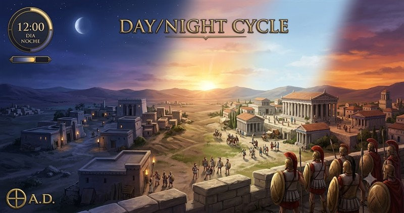
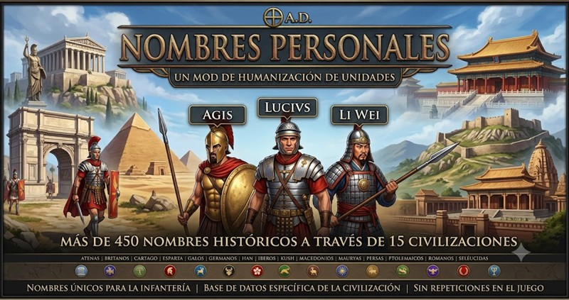
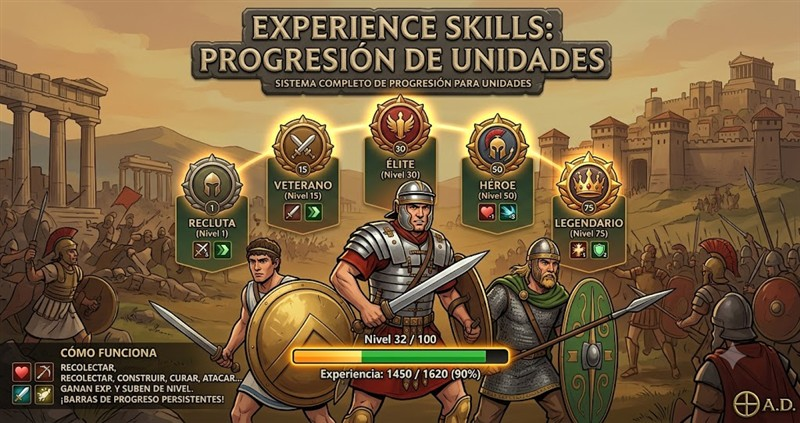

Day/Night Cycle
Reloj virtual en el HUD con fase del día (DIA/NOCHE/AMANECER/ATARDECER) y tinte de color a pantalla completa. Ciclo de 24 minutos.
Mods creados por freddyeleazar para mejorar tu experiencia en el juego de estrategia 0 A.D. ¡Descarga y disfruta!
Estos mods están diseñados para hacer tu juego más divertido y completo. ¡Haz clic en cada mod para ver más detalles!

Reloj virtual en el HUD con fase del día (DIA/NOCHE/AMANECER/ATARDECER) y tinte de color a pantalla completa. Ciclo de 24 minutos.

450 nombres históricos reales asignados a unidades según civilización (30 × 15 civs). Se muestra en el panel de selección.

13 habilidades con 100 niveles y 5 rangos. Barra de progreso visible en el panel de selección. Experiencia persistente.
0 A.D. es un juego de estrategia en tiempo real gratuito y de código abierto, ambientado en la antigüedad. Es similar a Age of Empires y está lleno de historia y civilizaciones fascinantes.
Estos mods están creados especialmente para niños y familias que disfrutan de 0 A.D. Son fáciles de instalar y hacer el juego más divertido sin complicaciones.
Todos los mods son creados por freddyeleazar, un jugador de 0 A.D. que quiere compartir mejoras divertidas con la comunidad.
C:\Users\[TuUsuario]\Documents\My Games\0ad\mods~/.local/share/0ad/mods~/Library/Application Support/0ad/modsSi tienes problemas para instalar un mod, no te preocupes. Pide ayuda a un adulto o revisa las instrucciones detalladas en cada página del mod.